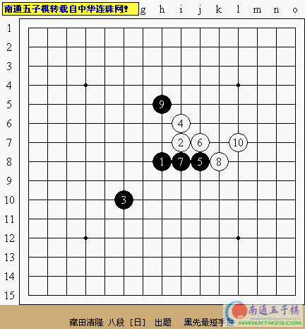
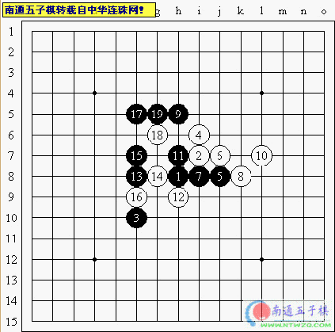
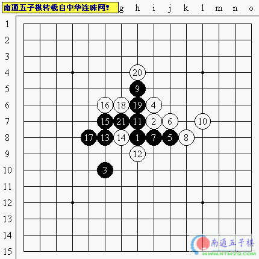
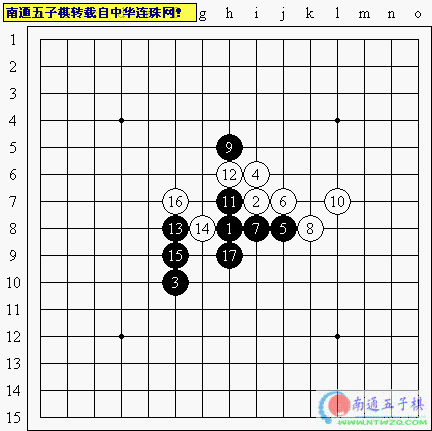

中华连珠网之每周习题（一2）
#1 中华连珠网之每周习题（一2） 作者：有志青年 发表时间：2006-5-29 17:18:23
题目选自日本连珠社机关志《连珠世界》2005年1月号上级题

[hf]



[/hf]
#2 Re:中华连珠网之每周习题（一2） 作者：zz06zz 发表时间：2006-5-30 12:57:30
支持
#3 Re:中华连珠网之每周习题（一2） 作者：光辉 发表时间：2006-6-1 0:51:49
看看
#4 Re:中华连珠网之每周习题（一2） 作者：鼠标 发表时间：2006-6-3 9:10:09
支持！！#5 Re:中华连珠网之每周习题（一2） 作者：fatso 发表时间：2006-6-4 12:32:24
看看#6 Re:中华连珠网之每周习题（一2） 作者：fuzj 发表时间：2006-7-11 8:17:46
kankan
#7 Re:中华连珠网之每周习题（一2） 作者：仙人掌 发表时间：2006-7-13 13:55:23
看看#8 Re:中华连珠网之每周习题（一2） 作者：素咖啡 发表时间：2006-7-14 15:06:20
xue学习#9 Re:中华连珠网之每周习题（一2） 作者：无尘 发表时间：2006-7-19 18:01:35
好题.
#10 Re:中华连珠网之每周习题（一2） 作者：yesmin 发表时间：2006-7-24 20:29:42
什么？？#11 Re:中华连珠网之每周习题（一2） 作者：强迫怎么 发表时间：2006-7-24 21:05:36
支持#12 Re:中华连珠网之每周习题（一2） 作者：糖果烟花 发表时间：2006-7-26 16:37:25
看看#13 Re:中华连珠网之每周习题（一2） 作者：dajiao 发表时间：2006-7-27 23:22:22
asdasd#14 Re:中华连珠网之每周习题（一2） 作者：弗雷德里希 发表时间：2006-8-4 13:17:18
想知道答案
#15 Re:中华连珠网之每周习题（一2） 作者：hazel 发表时间：2006-8-4 14:47:14
kankan#16 Re:中华连珠网之每周习题（一2） 作者：xialin 发表时间：2006-8-4 16:03:51
几手算最短？
#17 Re:中华连珠网之每周习题（一2） 作者：棋棋 发表时间：2006-8-7 8:51:43
瞧瞧
#18 Re:中华连珠网之每周习题（一2） 作者：董虎 发表时间：2006-8-16 18:31:47
瞅瞅#19 Re:中华连珠网之每周习题（一2） 作者：董虎 发表时间：2006-8-16 18:34:41
看看
#20 Re:中华连珠网之每周习题（一2） 作者：悟咨启 发表时间：2006-8-17 12:46:19
kan kan#21 Re:中华连珠网之每周习题（一2） 作者：liyach 发表时间：2006-8-28 23:57:04

#22 Re:中华连珠网之每周习题（一2） 作者：zzp197 发表时间：2006-9-3 9:15:21
学习#23 Re:中华连珠网之每周习题（一2） 作者：hsc931 发表时间：2006-9-3 15:35:16
我想知道是什么
#24 Re:Re:中华连珠网之每周习题（一2） 作者：xmlqj 发表时间：2006-9-8 17:01:20
看看
#25 Re:中华连珠网之每周习题（一2） 作者：啊丫呀 发表时间：2006-9-8 18:51:57
看看#26 Re:中华连珠网之每周习题（一2） 作者：lqy46 发表时间：2006-9-8 21:50:30
支持#27 Re:中华连珠网之每周习题（一2） 作者：Camel 发表时间：2006-9-12 23:56:08
look
#28 Re:中华连珠网之每周习题（一2） 作者：检查用户名 发表时间：2006-9-13 9:41:33
看看：）
#29 Re:中华连珠网之每周习题（一2） 作者：浩楠 发表时间：2006-9-13 11:47:39
顶啦,初学的
#30 Re:中华连珠网之每周习题（一2） 作者：孤独剑 发表时间：2006-9-14 12:28:28

#31 Re:中华连珠网之每周习题（一2） 作者：110q 发表时间：2006-9-16 9:57:38
看看.
#32 Re:中华连珠网之每周习题（一2） 作者：杨华明 发表时间：2006-9-20 18:08:14
学学#33 Re:中华连珠网之每周习题（一2） 作者：hhxx18 发表时间：2006-9-20 21:59:43
ddddddddd#34 Re:中华连珠网之每周习题（一2） 作者：ntren 发表时间：2006-9-21 21:49:37

#35 Re:中华连珠网之每周习题（一2） 作者：ggt123 发表时间：2006-9-25 12:00:12
看看 不知道是什么意思#36 Re:中华连珠网之每周习题（一2） 作者：天涯游子 发表时间：2006-9-26 17:02:31
看看#37 Re:中华连珠网之每周习题（一2） 作者：天涯游子 发表时间：2006-9-26 17:25:32
应该还有其他的解法的#38 Re:中华连珠网之每周习题（一2） 作者：星尘 发表时间：2006-9-26 17:53:30
看看#39 Re:中华连珠网之每周习题（一2） 作者：星尘 发表时间：2006-9-27 9:16:15
我走的是下面的路线，走复杂了。#40 Re:中华连珠网之每周习题（一2） 作者：文心雕龙 发表时间：2006-10-1 17:38:54

#41 Re:中华连珠网之每周习题（一2） 作者：五子小菜 发表时间：2006-10-2 17:50:52
学习一下！！！#42 Re:中华连珠网之每周习题（一2） 作者：浪影 发表时间：2006-10-12 0:30:07
ghf#43 Re:中华连珠网之每周习题（一2） 作者：破网的蜘蛛 发表时间：2006-10-12 16:20:13
好题.
#44 Re:中华连珠网之每周习题（一2） 作者：二十七刀 发表时间：2006-10-13 11:03:13
还要回复啊
#45 Re:中华连珠网之每周习题（一2） 作者：xzlht 发表时间：2006-10-14 10:57:59
可靠#46 Re:中华连珠网之每周习题（一2） 作者：默默无闻 发表时间：2006-10-14 18:00:52
支持
#47 Re:中华连珠网之每周习题（一2） 作者：若欷 发表时间：2006-10-22 16:44:09
不错#48 Re:中华连珠网之每周习题（一2） 作者：小海龟 发表时间：2006-10-23 4:12:49
学习#49 Re:中华连珠网之每周习题（一2） 作者：cjh199 发表时间：2006-10-23 7:41:20
学习学习#50 Re:中华连珠网之每周习题（一2） 作者：好累 发表时间：2006-10-24 16:00:03
看
#51 Re:中华连珠网之每周习题（一2） 作者：笨蛋020 发表时间：2006-10-24 19:59:40
侃侃#52 Re:中华连珠网之每周习题（一2） 作者：初学者 发表时间：2006-10-24 20:48:10
我要学#53 Re:中华连珠网之每周习题（一2） 作者：江风 发表时间：2006-10-26 17:33:38

#54 Re:中华连珠网之每周习题（一2） 作者：丁丁当当 发表时间：2006-10-26 22:13:34
看看#55 Re:中华连珠网之每周习题（一2） 作者：tyghbn 发表时间：2006-10-27 7:45:44
tt#56 Re:中华连珠网之每周习题（一2） 作者：天天天 发表时间：2006-10-27 12:42:12
look#57 Re:中华连珠网之每周习题（一2） 作者：棋坛菜鸟 发表时间：2006-10-27 19:17:52
挺难的#58 Re:中华连珠网之每周习题（一2） 作者：天上掉个馅饼 发表时间：2006-10-27 19:42:59
hei 赢#59 Re:中华连珠网之每周习题（一2） 作者：qxi214 发表时间：2006-10-28 19:17:16
好好学习#60 Re:中华连珠网之每周习题（一2） 作者：木野狐 发表时间：2006-11-17 11:19:46